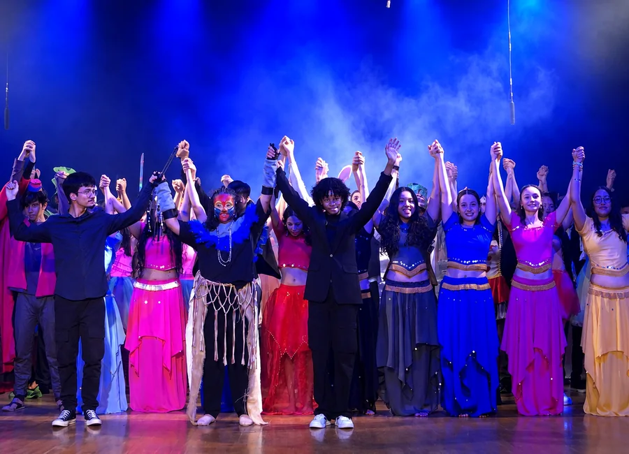
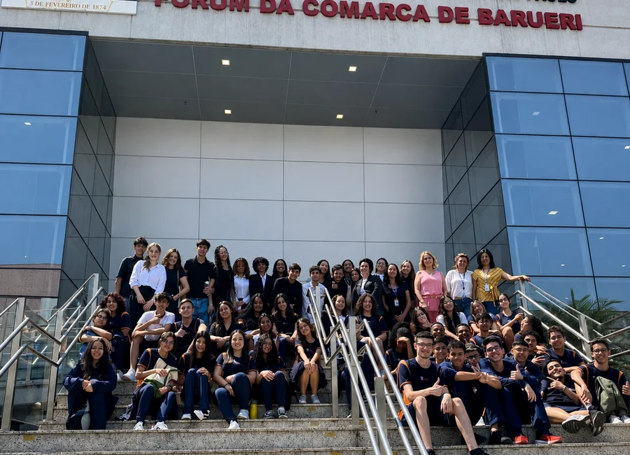
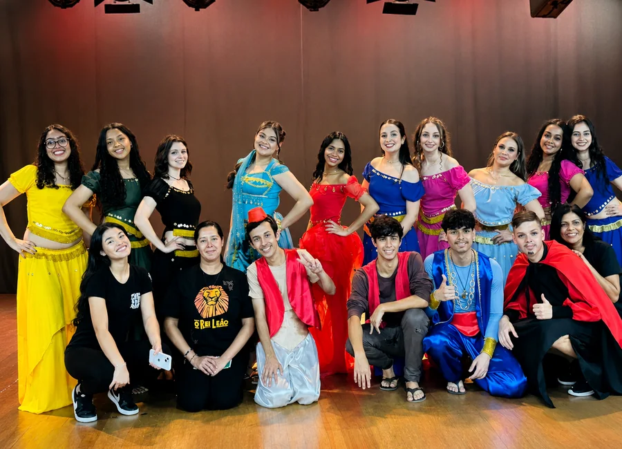

Aprender
Ensino de qualidade, professores preparados, Sistema COC e metodologia atual.
Uma escola que une tradição, Sistema COC, acompanhamento próximo e experiências reais para ajudar cada aluno a crescer com confiança.

O Perini valoriza aprendizagem, pertencimento e formação humana. Cada estudante é acolhido em sua individualidade e incentivado a desenvolver seu potencial.

Ensino de qualidade, professores preparados, Sistema COC e metodologia atual.
Uma escola acolhedora, onde cada aluno é conhecido pelo nome.
Projetos que desenvolvem autonomia, criatividade, responsabilidade e cidadania.
Da base ao vestibular, a proposta amadurece com o aluno sem perder acolhimento, acompanhamento e identidade Perini.

Leitura, escrita, raciocínio, autonomia e vínculo aparecem em uma rotina que acolhe, organiza e fortalece a aprendizagem.

É a etapa em que o aluno amplia responsabilidade, repertório e participação em projetos, sempre com orientação e escuta.

O Ensino Médio une aprofundamento acadêmico, rotina de estudos, simulados e projetos que preparam o aluno para vestibulares, ENEM e escolhas de futuro.
O aluno cresce, amadurece e amplia seus desafios sem perder vínculo, identidade e apoio.
Base forte de alfabetização, leitura, escrita e raciocínio.
Autonomia, organização da rotina e ampliação do repertório.
Projetos, pesquisa, cultura e mundo real na formação.
Preparação acadêmica para vestibulares e próximos passos.

O Perini conta com o Sistema COC para apoiar a rotina escolar com organização, conteúdo, avaliações e acompanhamento acadêmico.
As vivências desenvolvem comunicação, criatividade, pensamento crítico, colaboração e cidadania.

No Perini, o conteúdo ganha vida em experiências que integram arte, ciência, cultura, cidadania e trabalho colaborativo.
Conheça os projetos


Além das aulas, a rotina escolar reúne convivência, saídas pedagógicas, cultura, ciência e momentos que fortalecem o vínculo dos alunos com a escola.





No Ensino Médio, o aluno constrói base, autonomia e estratégias de estudo desde a 1ª série, com acompanhamento, avaliações, projetos e experiências que fazem o conteúdo ganhar sentido.
Conteúdos do Ensino Médio, avaliações COC, amadurecimento acadêmico e primeiros simulados no formato ENEM.
Resolução de questões, estratégias de prova e acompanhamento para vestibulares e ENEM.


O Perini combina tradição, proximidade e acompanhamento próximo. A direção, os professores e a equipe escolar participam ativamente da rotina e do desenvolvimento dos estudantes.



A estrutura da escola aparece na rotina: salas, convivência, projetos, recepção das famílias e momentos que ajudam o aluno a pertencer.
Acompanhamento próximo, diálogo e parceria fortalecem o desenvolvimento de cada aluno. No Perini, a relação com as famílias faz parte da proposta, e não apenas do atendimento.
Agende uma visitaUma escola onde aluno, família e educadores caminham juntos, com escuta, presença e consistência no dia a dia.
Agende uma visita, converse com nossa equipe e veja de perto como o Perini acompanha cada etapa da vida escolar.
Fale com a equipe do Colégio Perini ou venha conhecer a escola de perto.